Unlike Microsoft Windows, which represents drives as letters that precede pathnames (e.g., C:\), QNX OS represents disk drives as regular directories within the pathname space. Directories that access another filesystem, such as one on a second hard disk partition, are called mountpoints.

So, while in a DOS-based system a second partition on your hard drive might be accessed as D:\, in a QNX OS system you might access the second Power-Safe filesystem partition on the first hard drive as /fs/hd0-qnx6-2.
For more information on where to find things in a typical QNX OS
pathname space, see
Where everything is stored,
later in this chapter.
To learn more about mounting filesystems, see
Working with Filesystems.